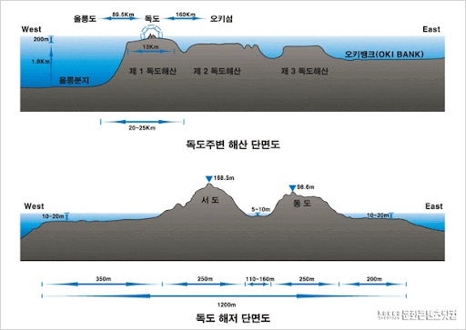
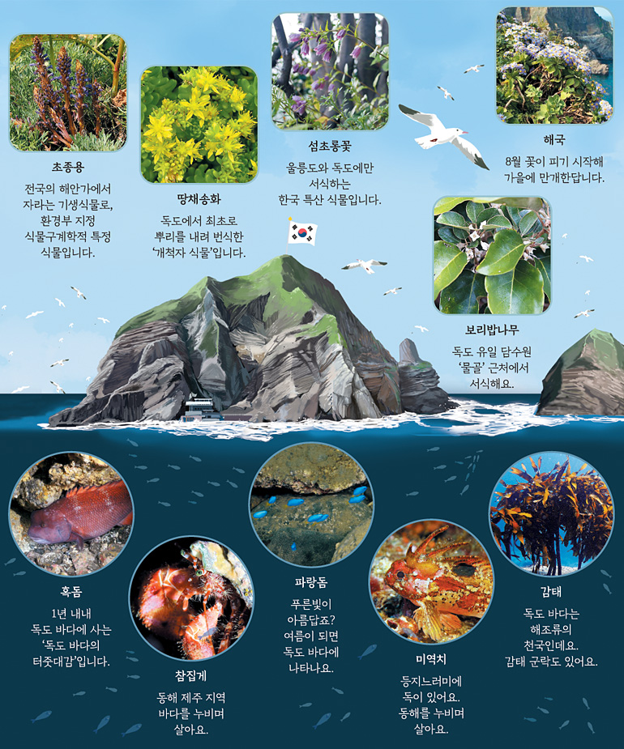

태고의 신비를 간직하고 있는 독도의 자연

독도의 지질
독도는 우리나라 동쪽 끝에 위치한 섬으로 동도와 서도 두 개의 섬과 주변의 암초들로 구성된 화산섬이다. 일반적으로 ‘독도’는 여러 차례의 화산활동으로 형성된 거대한 화산체 중에서 해수면 위로 드러난 부분, 즉 동도와 서도를 포함한 30여 개의 작은 암초들만을 일컫는 것이다. 독도와 연결되어 해수면 아래에 잠겨있는 화산체 전체를 명명할 때에는 해저지명의 원칙에 따라 ‘독도해산’이라고 한다. 독도해산은 크게 3개의 봉우리로 구성되어 있는데 이 중 2개는 물속에 잠겨있고, 1개는 정상부가 수면 위로 솟아 있는데 그 섬이 바로 독도이다. 독도에서 수면 위로 가장 높게 노출된 서도의 높이가 168m에 지나지 않지만 독도해산의 바닥부분이 약 25㎞, 정상부 폭만 해도 약 13㎞에 달하고 수심도 2㎞가 넘어 독도의 대부분은 물에 잠겨 있다고 할 수 있다.
독도는 동도와 서도 두 개의 섬과 주변의 암초들로 구성된 화산섬이다. 일반적으로 ‘독도’는 여러 차례의 화산활동으로 형성된 거대한 화산체 중에서 해수면 위로 드러난 부분, 즉 동도와 서도를 포함한 30여 개의 작은 암초들만을 일컫는 것이다. 독도와 연결되어 해수면 아래에 잠겨있는 화산체 전체를 명명할 때에는 해저지명의 원칙에 따라 ‘독도해산’이라고 한다. 독도해산은 크게 3개의 봉우리로 구성되어 있는데 이 중 2개는 물속에 잠겨있고, 1개는 정상부가 수면 위로 솟아 있는데 그 섬이 바로 독도이다. 독도에서 수면 위로 가장 높게 노출된 서도의 높이가 168m에 지나지 않지만 독도해산의 바닥부분이 약 25㎞, 정상부 폭만 해도 약 13㎞에 달하고 수심도 2㎞가 넘어 독도의 대부분은 물에 잠겨 있다고 할 수 있다.
형태적으로 봤을 때 독도는 거대한 기저부와 비교적 넓은 정상부를 가지는 평정해산 위에 소규모로 드러나 있는 일종의 성층화산이라고 할 수 있다. 가장 아래쪽 수심 약 2㎞인 동해 해저 상에는 직경이 약 25~30㎞에 달하는 화산체의 기저부가 형성되어 있다. 이곳에서부터 수심 약 200m까지는 비교적 경사가 완만한 순상화산의 형태를 띠고 있고, 다시 여기에서 수심 약 60m까지는 경사가 2° 미만으로 더욱 완만한 평정해산을 이룬다. 이 평정해산 위에 돌출된 암체가 바로 독도이다. 독도는 조립질의 화산쇄설물로 구성된 암석의 특징상 강도와 밀도가 크지 않아 파랑이나 바람에 의한 침식과 풍화에 약하고 또한 단층선 및 절리의 밀도가 높아 해수 유입에 의한 지속적인 침식을 받아왔을 것으로 생각된다. 독도해산을 포함한 주변의 해산들은 해산이 형성된 이후 해수에 의한 침식과정을 거쳐 정상부가 평탄한 모습의 평정해산(Guyot) 형태를 갖게 되었는데, 이러한 평탄한 정상부의 형태는 해수면 변동과 관련되어 있다는 것을 시사한다.
독도에 분포하고 있는 암석을 토대로 조사한 결과 독도는 독도해산이 생성된 후 잔류마그마의 분출로 형성된 것으로 보고 있으며, 플라이오세~플라이스토세 시기에 일어난 알칼리 화산활동에 의해서 형성된 것으로 해석되고 있다. 해수면 상에 드러난 독도의 암상은 7개 내지 8개 층서로 구분되며, 대부분이 화성쇄설암과 용암 및 관입암 등의 화산암들로 구성된다. 이들 암석의 연대측정 결과 대체로 270~210만 년 전 사이에 여러 차례의 화산암류 분출로 형성된 것으로 해석된다.
현재 독도의 암상을 통해 형성과정을 유추해보면 크게 몇 단계로 구분할 수 있다. 초기 단계는 해수면 아래에서 분출이 일어났던 시기로 하부의 괴상응회각력암과 조면안산암이 생성되었으며 응회암층인 상부층과 부정합 관계에 있기 때문에 상당한 시간적 간격을 두고 형성되었을 것으로 추측된다. 2단계에는 독도해산이 수면 가까이에서 폭발적인 분출이 있었으며 수면 위로 완전히 상승한 후 대기 중 용암 분출 및 화성쇄설성 분출이 나타나는 단계이다. 이 때 층상라필리응회암과 층상응회암이 형성되었다. 3단계는 폭발적 분출이 조용한 분출로 전환되면서 조면안산암질 용암이 분출되는 단계이다.
4단계는 해수가 유입되거나 화산 자체에 비축된 폭발력에 의해 막혀있던 화구에서 수증기 마그마성 폭발이 발생한다. 이때 먼저 분출된 용암의 파편과 마그마 화구를 메운 암석에 의해 다양한 암편들이 형성되는데 스코리아성 층상라필리응회암이나 이후 폭발력이 줄어들면서 분출된 조면암질 용암이 바로 그것이다. 5단계에서는 화구주변에 발달한 단층이나 절리를 따라 조면암의 관입이 나타난다. 마지막 단계에서는 화산활동이 멈춘 이후 파랑의 침식에 의해 독도해산의 상부 대부분이 침식되어 평탄한 형태를 띠고 이후 해수면 상승에 의해 현재와 같은 형태로 남게 되었다. 현재 해수면 위의 독도는 장경이 약 2.5㎞, 단경이 약 1.5㎞인 독도칼데라 외륜부의 남서쪽 잔류체로 생각된다.
독도와 울릉도의 화산암은 동일한 알칼리 계열의 조면암으로 구성되어 있고 동위원소도 일치하므로 동일한 기원물질로부터 유래된 것으로 생각된다. 하지만 해수면 위의 독도가 270~210만 년 전에 형성된 반면 울릉도는 140~1만 년 전에 형성되어 독도가 약 200만년 정도 먼저 형성된 것으로 알려졌다. 일각에서는 울릉도와 독도해산을 포함한 그 연장선상에 있는 해산들의 선상배열, 지형적 특성, 암석학적 특성 등을 근거로 열점 활동의 산물로 추정하기도 하나 이에 대한 보충 연구가 필요하다.
독도에서는 수중 및 대기 중 분출로 생긴 폭발성 화성쇄설암, 용암분출암, 관입암 등 다양한 화산암류들이 수차례 반복되는 분출윤회가 관찰되는데 현재 3개의 용암층을 기준으로 최소 3회의 분출윤회를 확인할 수 있다. 이렇듯 섬 전체가 화산암과 화산쇄설성 퇴적암류로 구성되어 있다. 독도와 주변 암초들에서 관찰되는 화산암류는 생성 시기를 기준으로 하부조면암 용암, 괴상 응회각력암, 층상 라필리응회암 및 응회암, 조면안산암 용암, 스코리아성 라필리 응회암, 상부조면암 용암, 조면암 관입체, 조면암 암맥, 열극충진각력암으로 분류할 수 있다.
이들은 지하 심부의 마그마가 지표로 분출되어 용암으로 냉각 · 고결되거나 기존 암석을 관입하여 형성된 것으로 규모나 모양에 따라 관입체 혹은 암맥으로 산출된다. 마그마가 내부의 유체 혹은 외부 물과의 반응에 의한 압력 증가로 폭발하게 되면 폭발성 화산물질이 생성되는데, 크기와 모양에 따라 화산회, 라필리 혹은 각력을 이루며 이들이 고화되어 암석화되면 각기 응회암, 라필리 응회암 혹은 각력암이 된다. 독도를 형성한 마그마는 용암, 응회암, 관입암 등 다양한 화산활동의 특성을 보여준다.
독도의 지형
독도 주변의 해저는 울릉분지와 같은 큰 분지, 여러 고지대와 화산섬, 해산 등으로 이루어져 복잡한 해저지형을 보이고 있다. 독도는 이 중 울릉분지의 북동쪽 끝부분에 위치하며 독도가 속한 화산체의 서쪽 화구륜(crater rim)에 해당한다고 보고된 바 있다. 울릉분지가 수심 2㎞ 이하이므로 독도는 해면 아래에 높이 2㎞ 정도, 하부 지름 20~25㎞인 봉우리 형태로 솟아 있다. 독도 하부는 수심 약 2㎞ 이상인 해저면에서부터 원탁형의 매우 큰 화산체를 이루고 있는 것으로 독도는 화산체 정상부분 중 극히 일부가 해수면 위로 노출된 것이다.
독도의 동남부 해저에서는 심홍택해산(제2독도 해산), 이사부해산(제3독도 해산)이 일군의 화산섬을 이루며 오키퇴(Oki Bank)로 이어진다. 이들 해산은 주변의 다른 해산과 마찬가지로 정상부가 비교적 평탄한 평정해산(guyot)이다. 이것은 화산작용으로 형성된 이후 지속적으로 파랑의 침식작용을 받았기 때문인 것으로 보인다. 독도 동쪽의 해산들은 독도보다 생성시기가 오래되어 해면 위로 드러난 부분이 제거된 반면 독도 해산은 아직 해면 위로 섬이 잔류해있다.
독도는 동해의 가운데 위치해 있는 화산섬으로 신생대 제3기 말부터 발생한 일련의 화산활동은 독도의 전체적인 윤곽을 형성하였다. 아울러 제4기 기후변화에 의해 발생한 해수면 변동과 더불어 파랑에 의한 침식과 퇴적 작용, 바람의 작용, 염분의 비말에 의한 풍화작용 그리고 매스무브먼트에 의해 현재의 다양한 지형들이 형성되었다. 또한 기반암 특성, 즉 기반암 종류와 분포, 절리 밀도, 수평층리의 특성, 지층 경사, 단층선과 절리의 분포 특성, 사면 경사 등도 독도의 지형 발달에 큰 영향을 미친다.
독도의 지형 발달은 화산지형적 요소와, 외적영력으로서 바다와의 상호작용, 기반암과 절리, 사면발달과 관련된 구조지형적 요소, 그 밖의 풍화지형 등으로 구분할 수 있다. 독도에서 확인되는 주요 지형은 주상절리, 탄낭구조 등의 화산지형, 단층선 암맥과 같은 구조지형, 파식대(shore platform), 시스택(sea stack), 해식동(sea cave), 해식아치(sea arch), 해식애(sea cliff), 자갈해안 등의 해안지형과 풍화지형으로 타포니(tafoni), 애추(talus) 등이 독도 전반에 걸쳐 분포한다.
독도는 형성 이후 오랜 풍화와 침식으로 화구를 비롯한 화산암체 대부분이 제거되어 전체적인 화산 형태나 지형을 확인하기는 힘들지만 현재 남아있는 독도의 퇴적상을 보면 화산쇄설물과 용암이 교호하면서 누층적으로 나타나는 성층화산의 특징을 보이고 있다. 한편 해수면 위에 남아있는 화산암체에서 수평절리와 수직절리가 높은 밀도로 분포하는데 수평절리는 주로 응회암과 조면암맥, 수직절리는 용암분출에 의해 형성된 조면안산암류에서 잘 나타난다.
화산지형에서 많이 볼 수 있는 주상절리는 용암이 냉각되는 과정에서 열적으로 수축되어 형성된 것으로 독도에서는 서도의 상부와 탕건봉의 상부를 이루는 조면안산암에서 확인된다. 일부 지역에서는 수평주상절리도 확인되는데 이것은 조면암이 수평방향으로 형성된 단층선을 따라 관입하여 이루어진 것으로 형성과정은 주상절리와 동일하다. 화산이 폭발하면서 분출된 화산암괴나 화산탄이 퇴적이 진행 중인 화산쇄설층에 떨어져 박혀 형성된 주머니 모양을 탄낭(bomb sack)이라 하고 이런 지층 구조를 탄낭 구조라고 하는데, 이 역시 독도의 여러 곳에서 관찰된다.
독도는 외해의 가운데 위치하여 해안에 도달하는 파랑에너지가 매우 크다. 특히 폭풍이 내습하거나 태풍이 통과하면 파랑에너지의 크기가 더욱 커져 해안지형 발달에 지대한 영향을 미친다. 또한 신생대 제4기 플라이스토세에 걸쳐 일어난 지반 운동과 해면 변동은 해안지형에 반영되었는데, 독도해산 정상부에 넓게 형성된 평탄면은 신생대 제4기 동안 파랑의 침식을 받아 형성된 것으로 당시의 해수면을 반영하는 지형이라고 볼 수 있다. 따라서 독도해안은 화산체가 형성된 이후 지속적인 파랑의 침식작용을 받아 축소되고 있음을 알 수 있다.
현재 독도의 해안에 나타나는 지형은 신생대 제4기 홀로세 중기 이후 해수면이 현 수준에서 이르러 안정됨에 따라 형성된 것들이다. 파랑의 침식작용으로 파식대, 해식애, 시스택, 해식동, 해식아치, 자갈해안과 같은 지형들이 전형적으로 나타난다. 특히 해안 부근에는 파랑의 침식에 대한 저항력이 약한 응회암으로 이루어져 있어 파식대가 넓게 형성되어 있는데, 이것은 홀로세 중기 해수면이 현재 수준에 도달한 이래 약 6,000년 동안 파랑의 침식작용으로 형성된 것이다. 파식대가 넓어지면서 해안의 사면이 후퇴하여 형성된 해식애는 높은 밀도의 단층선, 침식에 약한 기반암 특성으로 인해 전 해안에 걸쳐 발달한다.
해식애 가운데 단층선이 통과하거나 절리밀도가 높은 지점에는 해식아치나 해식동이 형성된다. 동도와 서도 주변에서 관찰되는 다양한 크기와 모양의 암초들은 파식에 의해 약한 부분이 제거되고 풍화와 침식에 대한 저항력이 강한 부분이 남아 형성된 시스택이다. 이것은 본래 섬에 연결되어 있다가 파랑의 침식에 의해 분리되어 형성되었다. 해안을 따라 형성된 해식아치나 시스택은 각각의 독특한 모양을 본떠 이름이 붙여져 있으며 독도의 대표적 관광자원이 되고 있다. 자갈해안은 헤드랜드 사이에서 만의 형태를 취하고 있는 해안에서 확인된다. 구성물질은 해안에 도달하는 파랑에너지가 커서 비교적 큰 자갈(cobble-boulder급)들이 혼재되어 있다.
독도에는 단층선이 높은 밀도로 분포하는데 거의 모든 지층들은 단층에 의해 변위되거나 절단되었다. 단층선을 따라서는 침식과 풍화작용에 의해 깊은 골짜기나 절리가 나타난다. 단층의 대부분은 정단층이며 주향은 서북서-동남동 내지 북서-남동 방향이 우세하다. 단층선이 해면과 만나는 곳에서는 파랑의 침식작용으로 해식동이 형성되어 있다.
독도는 동해 가운데 위치하여 모든 방향에서 접근하는 파랑의 영향을 받는다. 파고가 높은 파랑이 해안에 부딪히거나, 비말에 포함된 염분이 암석의 절리에 침투하여 다양한 형태의 풍화지형은 형성한다. 독도에서 관찰되는 대표적 풍화지형인 타포니(tafoni)는 기반암 특성, 지질구조선 분포, 사면경사와 토양피복, 식생피복에 따라 분포에 차이를 보이는데, 특히 단층선이 통과하는 부분은 절리가 많이 형성되어 있어 단층선을 따라 타포니 발달이 용이하다. 독도에서는 주로 응회암으로 구성된 해식애에서 집중적으로 나타나며 규모도 큰 편이다.
서도 어민숙소 북쪽 해안에서는 거의 수직에 가까운 배후사면에서 떨어져 나온 암설들이 해안에 퇴적된 소규모의 애추(talus)를 관찰할 수 있다. 일반적으로 애추는 동결ㆍ융해가 빈번하게 반복되는 빙기에 형성된 것이지만, 독도해안은 현재도 배후사면의 식생이 빈약하고 애추의 규모도 작으므로 후빙기에 형성된 것으로 생각된다. 동도 가운데에는 비교적 큰 침식와지가 관찰되는데 해발고도 60m 내외인 지표면으로부터 수직으로 해면까지 이어진다. 이 침식와지는 단층선이 교차하는 지점에서 기반암에 절리가 높은 밀도로 형성되고 가장 하부의 괴상각력응회암이 천장굴을 통해 유입된 파랑에 의해 기반암이 차별적인 침식을 받아 제거됨과 동시에 상부 기반암들도 하부로 함몰된 이후 파랑에 의해 제거되어 수직의 와지가 형성된 것으로 보인다.
한편 독도의 많은 부분은 토양층 발달이 미약하여 기반암이 노출되어 있는데, 이는 파랑에 의해 형성된 해식애이거나 또는 사면경사가 대단히 급하여 토양층이 형성되기 어렵기 때문이다. 그러나 일부 식생이 분포하는 곳에서는 토양층이 분포하므로 토양분포는 식생분포와 관련된 것으로 보인다. 독도 산지의 정상부 부근의 모암은 알칼리성 화산암이며, 토양은 이 모암이 풍화되어 형성된 잔적토이다. 토성은 부분적으로 양토(loamy sand)도 분포하지만, 대부분 사질토 내지 사질양토이다.
동도에는 토양층이 없거나 1㎝ 이하로 토양층 발달이 불량한 곳이 넓게 나타나지만, 사면 경사가 완만한 일부 지역에는 비교적 두꺼운 토양층이 분포한다. 이것은 사면에 식생피복이 불량하여 많은 강수량과 강한 바람으로 인해 토양층이 유실되었기 때문인 것으로 보이며, 인간 활동과도 관련이 있는 것으로 추정된다. 토양층은 특히 동도의 정상부에서 북동쪽으로 연결되는 사면에 10㎝ 이상의 두께로 퇴적되어 있다. 일부 지역은 토양층 두께가 약 20㎝에 이르는 곳도 있는데, 이러한 지역은 사면경사가 완만하여 토양침식이 적고, 사람들의 접근이 차단되어 식생과 토양이 상대적으로 잘 보전되었기 때문인 것으로 보인다. 서도의 토양분포 특성도 동도와 유사하며 정상부 남쪽에 사면경사가 완만한 곳에 토양층이 상대적으로 두껍게 형성되어 초본들이 높은 밀도로 분포한다. 북쪽 사면이 개석된 물골 골짜기에도 토양층이 상당히 두껍게 분포하는데 이곳은 독도 식목사업의 대상지로 많은 목본들이 식재되어 있다.
독도의 기후와 해양

독도는 사면이 바다로 둘러싸여 있어 같은 위도의 내륙 지역보다 겨울이 상대적으로 온화하며 여름은 더위가 심하지 않고 강수가 연중 고른 해양성 기후의 성격이 강하다. 또한 독도는 중위도에 위치하기 때문에 계절변화가 뚜렷하다. 대륙의 동안에 위치하기 때문에 겨울철에는 대륙의 찬 고기압의 영향을 받고, 여름철에는 해양에 고기압이 형성되어 해양의 영향이 탁월하다. 기단 배치를 통해 살펴보면 여름에는 북태평양 기단의 영향이 탁월하여 덥고 습하며, 겨울에는 시베리아 기단의 영향을 받아 춥고 건조하다.
또한 동해상에 위치한 섬이므로 해양의 영향을 크게 받는다. 동해는 수심이 깊고 표면적이 넓어 겨울철에도 9~10℃를 유지하여 서해보다 따뜻하다. 독도의 기후에 영향을 미치는 해류로는 동한난류와 북한한류가 있는데 여름에는 동한난류의 영향이 탁월하고 겨울에는 북한한류와 동한난류가 울릉도 부근에서 만난다. 이렇게 수리적 · 지리적 위치, 기단배치, 해류, 고도 등의 인자들이 복합적으로 작용하여 독도의 기후특성을 결정한다.
독도의 연평균기온은 13.8℃로 같은 위도대의 다른 지역에 비해 높은 편이다. 연교차는 20.5℃로 같은 위도대의 다른 지역들보다 작다. 이것은 동한난류와 해양의 영향으로 여름철 기온은 상대적으로 낮고 겨울철 기온은 높기 때문이다. 월평균기온은 1월과 2월 기온이 가장 낮고 8월 기온이 가장 높다. 강수량은 여름철에 많은데 9월 강수량이 가장 많다. 연강수량에서 겨울철 강수량이 차지하는 비율도 22% 정도로 높다. 독도의 풍향을 계절별로 살펴보면 모든 계절에 서풍과 남서풍이 탁월하게 나타난다. 봄과 여름에는 남서풍이 25% 정도를 차지하고 겨울을 제외한 모든 계절에 동풍은 20~25%를 차지한다. 독도와 울릉도는 태풍이 빈번하게 지나가는 경로에 위치하여 한 해 평균 2~3개 태풍의 직접적인 영향을 받는다. 태풍의 영향 정도에 따라 연강수량에 큰 편차를 보이기도 한다.
독도가 위치하고 있는 동해는 태양으로부터 열이 공급되는 적도 해역으로부터 에너지를 북쪽으로 이동시키는 길목에 해당하는 중위도에 위치하고 있으며, 아시아 대륙과 태평양 사이에서 일어나는 물질 교환의 통로 역할을 한다. 동시에 동아시아 몬순의 영향으로 상층에서는 계절적으로 뚜렷하게 다른 해양학적 특성을 가지고 있다. 동해의 상층에서는 동한난류, 쓰시마해류, 리만해류, 북한한류와 같은 해류가 있으며, 북부 해역의 냉수와 남쪽의 난수 사이에는 강한 극전선이 형성된다. 또한 해류들의 시공간적 변화가 심해 사행과 소용돌이를 수반하기도 한다.
독도 주변의 해류는 위치적 특성상 단일 형태로 특정지어지지 않고 난류와 한류가 공존한다. 난류는 주로 쿠로시오로부터 공급된 해수를 운반하는 흐름으로 쿠로시오해류로부터 갈라져 나온 쓰시마난류는 대한해협을 통과하면서 몇 갈래로 분리되어 흐르다가 북위 37.5° 정도에 이르러 동쪽으로 방향을 바꾸어 쓰가루해협을 향하게 된다. 한류는 리만한류와 연결된 북한한류가 동해안을 따라 남쪽으로 흐르다 동쪽으로 방향을 바꾸어 흐르는 흐른다.
난류와 한류처럼 성질이 크게 다른 바닷물이 접하는 해역에서는 수온이나 염분이 수평적으로 급격하게 변하는데 이를 전선이라고 한다. 북상하는 동한난류가 동해 연안에서 이안되어 동쪽으로 흐르는 해류가 동해를 통과할 때 이 해류의 북쪽에는 상대적으로 찬 한류와 접하게 되어 수온의 변화가 크므로 전선이 나타난다. 이 전선을 통상적으로 극전선으로 부르는데 일반적으로 극전선은 동한난류가 형성되지 않거나 약한 경우를 제외하고 울릉도 북쪽에 형성되기 때문에 독도 인접해역은 평균적으로 난류의 지배를 더 많이 받는다.
독도 주변 해역 상층 해류의 형태를 지배하는 다른 현상으로 소용돌이(eddy, 渦動)가 있다. 독도 북쪽을 통과하는 해류는 이동 형태에 변화가 매우 다양하여 직선 형태로 나타나지 않고 곡류(meandering)하면서 독도 주변의 해류 형태를 조절하는데 곡류가 심해져 해수 흐름이 시계 혹은 반시계방향으로 회전하게 되면 소용돌이가 발달하게 된다. 독도 주변해역에서는 동한난류가 동해연안에서 분리되어 동쪽으로 흐르면서 일부가 남서쪽으로 재순환하는 과정에 울릉도 부근에서 난수성 소용돌이가 형성되어 거의 상존하고, 상대적으로 규모가 작은 냉수성 소용돌이도 형성되어 있음이 밝혀졌다. 이 난수성 소용돌이는 시계방향의 흐름을 유지하면서 수 백m 이상의 깊이까지 영향을 미치기도 한다. 이러한 소용돌이와 해류의 특성은 인근 해역의 날씨를 결정하는 가장 중요한 해양 현상이라고 할 수 있다.
한편 독도 해역 심층에서의 해류는 전체적으로 해저 지형의 영향을 받아 등심선을 따라 흐르는 경향이 강하다. 지난 1996년부터 울릉도와 독도 사이의 한국해저간극에서 심층해류 관측을 해 온 결과 최대 유속 30㎝/s 이상의 지속적인 북향류가 관측되었는데, 이 강한 북향류는 지속적인 성격으로 인해 최근 ‘독도심층류(Dokdo Abyssal Current)’로 명명되기도 하였다.
독도의 강수량
독도는 안개가 잦고 연중 흐린 날이 160일 이상이며 강우일수는 150일 정도로 연중 85%가 흐리거나 눈˙비가 내려 비교적 습한 지역이다. 연평균 강수량은 1,383.4mm, 겨울철 강수는 대부분 적설 형태이며 폭설이 많이 내리는 것이 특징이다.
독도의 생태계
독도는 우리나라 동쪽 끝에 자리 잡고 있는 섬으로 전반적으로 온난다습한 해양성 기후가 나타나지만 계절변화가 뚜렷하고, 난류와 한류가 교차하는 지점이라 우리나라의 다른 어느 곳보다 다양하고 독특한 생태계를 보유하고 있다. 육지에서 200㎞ 이상 떨어져 있고 그 동안 사람들의 접근이 어려워 비교적 자연환경이 잘 유지되었으나 근래 들어 입도하는 관광객 수가 증가하면서 생태계의 파괴가 우려된다.
먼저 독도의 육상 생태계를 살펴보면 육상 생태계의 모태는 식물이라고 할 수 있다. 독도는 해저화산활동에 의해 동해 해저평원 상에 형성된 대양도로서 대륙의 생물종을 그대로 가지고 분리된 대륙도와는 달리 생물의 종수가 적다. 또한 육지와의 거리가 멀고 동해의 수심도 깊어 외부로부터 종의 유입이 상대적으로 어렵기 때문에 새로운 종의 침입과 정착 과정, 그에 따른 생물의 진화나 천이과정이 명확히 드러난다. 대양도는 섬의 생성시기와 지리적 위치에 따른 기후특성, 면적과 고도에 따른 종의 수, 종 공급원인 대륙과의 거리, 종 유입시기와 운반매개체, 해수의 염분농도와 토양영양염류 등 여러 조건에 따라 생물상은 현저한 차이를 보인다.
독도는 수리적 위치상 아한대남단 해역에 속하며 난류와 한류가 교차하는 지점에 위치하고 있어 연평균 12℃ 정도로 같은 위도의 다른 지역에 비해 비교적 온난한 기후를 보인다. 또 눈, 비가 내리거나 흐리고 짙은 해무가 끼는 날이 많아 다습하여 독도의 식물상은 전체적으로 아열대 식물상과 유사한 양상을 나타낸다.
독도는 섬의 면적이 좁고 면적의 대부분이 급경사를 이루고 있어 식물이 정착할 공간이 부족할 뿐만 아니라 토양 발달도 어렵다. 또한 연중 강한 바람과 많은 강수량은 일부 존재하는 토양의 유실을 야기한다. 노출된 기반암과 급경사 사면, 얕은 토양층, 척박한 토질, 높은 염분, 부족한 담수 등 독도는 식생의 정착에 있어 불리한 환경을 가지고 있다. 따라서 독도에 자라는 식물들은 키가 작고 뿌리가 짧은 초본류가 대부분이며 큰 목본류는 자라기 매우 힘든 것으로 알려져 있다.
지금까지 30여 차례에 걸쳐 독도 식물상에 대한 연구 및 조사가 이루어졌는데 최소 34종에서 최대 75종까지 조사자에 따라 식물종에 상당한 차이가 있다. 지금까지의 연구결과를 종합해보면 독도에 자라고 있는 식물종은 총 48분류군이 서식하고 있는 것으로 관찰되었으며 이 중 환경부가 지정한 식물구계학적 특정식물은 총 13분류군이다.
독도에는 교목인 곰솔과 함께 보리밥나무, 넓은잎 사철나무, 섬괴불나무 등의 관목, 개밀, 해국, 섬시호, 큰두루미꽃, 도깨비쇠고비, 왕김의털 등의 초본류가 자란다. 이들은 대부분 경사가 다소 완만한 곳에 분포하고 있다. 섬시호와 큰두루미꽃은 환경부에서 보호식물로 지정보호하고 있으며, 왕호장근은 구황식물로 이용되기도 했다. 주로 벼과(15종류), 국화과(11종류) 등이 많이 분포하는데 이것은 이들 식물이 건조에 강하고, 척박한 땅에 살 수 있으며, 바람에 잘 전파되고, 내염성이 있는 종류들이 많기 때문이다.
독도에 자라는 섬기린초, 섬장대, 섬괴불나무 등은 울릉도 고유종인데, 독도에 분포하는 대부분의 종들이 울릉도와 공통종으로 식물지리학적 측면에서 독도는 울릉도와 가장 가까운 종 구성을 보이고 있다. 독도의 식물 가운데 많은 종이 한반도에서 울릉도를 거쳐 독도에 전파된 것으로 보이나 대나물과 같이 한반도 육지에서 직접 유입된 종들도 있다. 이들 종은 바람이나 해류, 조류를 통해 유입되거나 인간에 의해 도입된 것으로 생각된다. 아직까지 독도에만 고유하게 분포하는 식물 종류는 알려진 바 없다.
독도에 자생하는 목본류로는 섬괴불나무, 사철나무, 보리밥나무, 댕댕이덩굴, 개머루, 동백나무가 있다. 이 중 섬괴불나무는 울릉도와 독도에서만 자라는 희귀종으로 높이 1.5~2m, 지름 20㎝의 나무들이 숲을 이루고 있다. 독도는 한반도와는 달리 천이가 일어나지 않는 독특한 초지가 나타나는데, 이는 독도의 지형이 경사가 급하고, 토양층이 얕고, 바닷바람이 강하게 부는 등 환경조건이 열악하기 때문이다. 독도에 사는 식물은 키가 작아서 강한 바닷바람에 잘 적응하며, 잎이 두텁고 잔털이 많아 가뭄과 추위에도 잘 견딘다.
독도는 식물의 씨앗을 전해줄 공급원(source)가 멀고, 경사가 급하여 토양이 발달하지 못하고, 비는 내리지만 물 빠짐이 좋기 때문에 수분이 항상 부족하여 자생하는 식물의 종류가 적다. 그러나 최근 사람의 왕래가 많아지고 무분별하게 외지식물들을 심으면서 옮겨온 잡초성 귀화식물들이 많다. 그 중 왕호장근은 독도의 생태계에 가장 큰 영향을 미치고 있는 종이며, 그 밖에 마디풀, 참소리쟁이, 흰 명아주, 가는명아주, 까마중, 방가지똥, 민들레, 닭의장풀 등이 독도 전역으로 확산되고 있다. 본래 독도의 자생식물은 국화과 식물이 주를 이루고 있었으나 외부로부터 벼과식물과 다른 귀화식물이 유입되면서 자생종과 경쟁하고 있는 실정이다.
과거에는 독도로의 진입경로가 한정되어 있었으나 최근 동도에 접안시설이 마련되고 울릉도~독도 간 정기항로가 개설되면서 독도에 입도하는 인원이 크게 증가하였다. 이에 따라 인위적으로 식재하거나 우연히 유입된 종들이 많아졌고 독도에 자라는 식물종 가운데 19종이 독도에 원래 자생하던 종이 아닌 것으로 밝혀져 독도 식물생태계의 교란이 우려된다. 독도의 목본식물 중 보리밥나무, 섬괴불나무, 동백나무, 곰솔, 사철나무, 후박나무, 눈 향나무, 울향나무, 무궁화는 인위적 식재에 의한 것이다. 따라서 독도의 생태계 보호를 위해 외부로부터 유입된 종에 대한 관리 대책이 요구된다.
다음으로 독도의 육상생태계 중 동물상에 대해 살펴보면 독도에서 관찰되는 육상 동물은 크게 조류, 곤충류, 포유류로 구분할 수 있다. 독도에서 양서류와 파충류가 발견되었다는 기록은 아직 없기 때문이다. 독도의 조류상에 대한 연구는 그동안 일부 학자들에 의해 이루어져 왔는데, 원병오 · 윤무부는 8종 76개체, 우한정 · 구태회는 17종 153개체를 관찰하였고 괭이갈매기는 가장 많은 개체가 관찰되어 우점종이었다. 2005년 환경부의 독도생태계정밀조사에서는 25종이 관찰된 것으로 보고되었고, 권영수는 총 92종의 조류를 확인하였다. 이렇게 결과의 차이가 큰 것은 계절에 따른 조류상의 변화폭이 크고, 조사 시기나 빈도에 따라 종의 풍부도 및 다양성이 다르게 나타나기 때문이다.
독도에 서식하는 조류로는 괭이갈매기를 포함하여 바다제비, 고니, 흰줄박이오리, 되새, 노랑턱멧새, 알락할미새, 상모솔새, 노랑말 도요새, 황조롱이, 슴새, 메추라기 등이 있다. 이들 가운데 개체수가 가장 많은 조류는 괭이갈매기와 바다제비, 슴새 순이며, 멸종위기종은 매(Ⅰ급), 벌매, 솔개, 뿔쇠오리, 올빼미, 물수리, 고니, 흑두루미(이상Ⅱ급) 등 8종이다. 동북아시아에서만 볼 수 있는 슴새와 바다제비, 괭이갈매기 등 3종은 군집하여 서식하고 있다. 슴새와 바다제비는 감소되고 있으며, 괭이갈매기는 2,000~3,000마리 정도로 추정된다. 독도 서도의 남사면과 동도 독립문바위 서쪽, 벼과 여러해살이식물인 개밀이 자라는 곳은 괭이갈매기의 대번식지로 알려져 있다.
한편 독도는 남북으로 이동하는 철새들이 쉬어 가는 구원섬으로 깝작도요, 황로, 왜가리, 슴새 등의 여름철새, 민물도요, 재갈매기, 말똥가리 등의 겨울철새, 꺅도요, 노랑발도요, 청다리도요 등의 나그네새 등 다양한 철새들의 기착지 및 휴식처로서 기능하고 있음이 확인되었다. 이에 따라 1982년 11월 16일 ‘독도 해조류 번식지’로 지정되었다가 1999년 12월 천연기념물로 지정되면서 명칭이 ‘독도천연보호구역’으로 바뀌었다.
독도의 곤충류는 잠자리, 집게벌레, 메뚜기, 매미, 딱정벌레, 파리, 나비 등 9목 35과 53종이 서식하고 있는 것으로 알려져 있으나 조사마다 약간의 차이가 있다. 해류 및 계절풍의 영향으로 비교적 온난하여 남방계 곤충(50.9%)이 북방계 곤충(39.7%)보다 많으며 이들은 쿠로시오 해류와 대마 해류의 이동으로 옮겨진 것으로 본다. 본토와의 공통종은 전체의 약 90%이상을 차지하고 울릉도와의 공통종은 전체의 70%정도이며 독도 고유종은 3종으로 약 8%를 차지한다. 이러한 점으로 미루어 한반도와 밀접한 관련을 가졌으며 식생과 마찬가지로 한반도-울릉도-독도 순으로 이동한 것으로 보인다. 한편 그동안 독도에서는 독도장님노린재, 섬땅방아벌레, 어리무당벌레, 남방남색꼬리부전나비 등 국내에서 알려지지 않은 미기록 종이 발견되어 학계의 주목을 받았다.
현재 독도에 자생하는 야생 포유류는 없고 독도경비대에서 기르는 삽살개가 있을 뿐이다. 예전에는 독도 주변 암초에 해양 포유류인 강치가 다수 서식하였으나 일제 강점기에 가죽과 기름을 얻기 위한 일본 어업회사의 과다한 남획으로 현재는 멸종(혹은 절멸)된 것으로 이해되고 있다. 또한 1973년에 경비대가 본토에서 가져다가 토끼 10마리를 방사한 적이 있었는데 한때 그 수가 많아져 식생 파괴 등의 문제가 발생한 적이 있어 현재는 이들 모두 제거되었다. 섬이라는 특수한 환경을 고려할 때 외부 동 · 식물 유입에는 조심스러운 접근이 필요하다.
다음으로 독도의 해양생태계를 살펴보면 최근 독도와 관련하여 영토문제가 부각되면서 동시에 독도의 해양생태학적 특성과 함께 주변 해역의 수산자원의 가치에 대한 재평가가 이루어지고 있다. 독도 주변 해역의 생태, 자원학적인 조사는 해양생물군을 대상으로 몇 차례 이루어진 적이 있으나 본격적인 수중 생태조사는 1997년부터 시작되었고, 최근 독도 전문 연구사업단이 발족되어 매년 수중조사를 포함한 기초생태학적인 자료들을 축적해오고 있다.
독도는 울릉도와 유사하게 남쪽에서 올라오는 대만난류의 영향권에 속하여 많은 난류성 생물들이 관찰된다. 겨울철에는 수온이 10℃ 이하로 하강하기도 하여 한류성 생물종들도 서식하고 있어 난류와 한류가 교차하는 해역의 특성을 보여준다. 때문에 독도는 우리나라 동해안이나 남해, 제주도와는 또 다른 독특한 해양 생태적 특징을 지닌 해역으로 생태학적 관점에서 매우 중요한 해역이다. 1997년부터 실시된 수중생태 조사에서는 수중 지형별 대표 지점 5 곳을 선정하여 생물분류군별로 구분한 후 해조류, 무척추동물, 어류 각 종의 분포, 개체군 구조 및 생태, 현존량을 추정하였다. 독도 연안 위치와 수심, 지형적 특성, 계절에 따라 이들 분포에 차이를 보이는 것으로 관찰되었다.
현재까지 독도 연안의 해조류는 대황, 감태, 미역 등 대형 갈조류를 포함하여 총 160여종이 기재되어 왔다. 무척추 동물은 조사 시 마다 다소 차이를 보이는데 다모류 32종, 집게류 6종, 연체동물 64종 등 한대성 · 온대성 종이 혼합하여 서식하는 특성을 갖고 있었다. Je et al.(1997)은 연체동물 40종, 환형동물의 갯지렁이류 56종, 절지동물의 갑각류 55종, 극피동물 6종 등을 포함하여 총 157종의 무척추동물 종을 기재하고 있다.
독도 연안의 어류는 1997년 독도 연안 어류 조사 당시 58종이 확인되었으나 그 후 19종이 추가 확인되어 지금까지 총 77종으로 기록되고 있다. 독도 주변 해역의 어종 구성을 보면 열대 어종이 37.8%, 아열대 어종이 22%, 온대 어종이 40.2%로 나타났다. 제주도 남부 해역에 비해 상대적으로 온대 어종이 많이 분포하는데 이는 독도 주변 해역에서 난류와 한류가 교차함을 보여준다. 앞으로 우리나라 주변 해역에 난류 세력의 확장과 함께 열대, 아열대성 어종들이 추가 발견될 것으로 보인다.
1997년부터 독도 주변의 수중 서식생태를 고려한 수산 생물종의 자원현황, 관리방안에 대한 연구도 이루어졌다. 1997년 5월 독도연안의 수산생물의 생산성 조사 결과, 연어병치, 조피볼락 등 총 20종의 어류와 문어, 군소 등 연체동물 7종, 성게 등 극피동물 5종 외에 갑각류 3종 등 총 35종이 확인된 바 있다. 1999년 5월에는 총 27종(어류 15종, 연체동물 6종, 극피동물 5종, 갑각류 1종)의 수산 생물이 확인되었다. 지금까지 독도 연안에서 기록된 해양생물자원은 어류를 포함하여 동물 145종과 해조류 44종이다.
독도는 이들 생물이 서식하기에 적합한 해저 환경을 지니고 있어 독도연안에 서식하는 많은 정착성 어종들의 유어 서식장으로 이용되고 있으며, 계절에 따라 큰 환경 변화를 초래하여 다양한 회유성 어종이 출현하므로 어족 자원이 풍부하다. 또한 빼어난 수중 경관을 가지고 있어 향후 울릉도, 독도 연안을 연계한 관광자원 개발 잠재력이 매우 크다고 할 수 있다. 따라서 독도 연안의 어족 자원에 대한 정밀한 생태 · 자원 조사와 이를 기반으로 한 적정 어업 생산 총량 산출을 통해 어족 자원 보존에 힘쓰는 한편, 수중 생태 보존 및 관리의 노력이 뒷받침되어야 할 것이다.